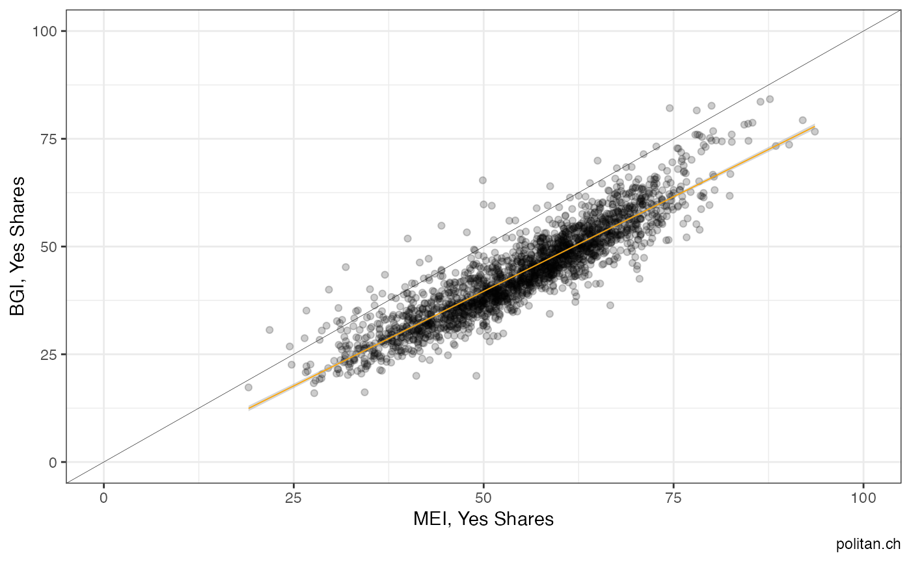

For the sake of illustration we are interested in the result of the 2014 vote on immigration for Swiss municipalities. The initiative was voted upon on 9th of February 2014. There are different ways to find this exact vote. One of them is using the information in the title. An other solution would be to look up the id provided by the FSO.
unique(federalvotes$name[grep("Massen", federalvotes$name)])
First, we invoke the necessary packages and use the function get_nationalvotes to access the data. We further specify the unit of analysis as well as the range.
# installation from CRAN (stable)
# install.packages("swissdd")
# install.packages("dplyr")
# installation from github (ongoing updates)
# devtools::install_github("politanch/swissdd")
library(swissdd)
library(dplyr)
library(ggplot2)
library(tidyr)
#get results of all votes between 2010-2019
federalvotes <- get_nationalvotes(geolevel = "municipality",
from_date = "2010-03-07",
to_date = "2020-09-27")
#get correlations for votes on municipal level with mei
simvotes <- similar_votes(federalvotes, id=5800, from=.4, to=.6)
simvotes
#> # A tibble: 4 x 2
#> id correlation
#> <chr> <dbl>
#> 1 6350 0.577
#> 2 5990 0.555
#> 3 5710 0.482
#> 4 5960 0.452
#extract names of correlated votes
ballotnames <- federalvotes %>%
dplyr::select(name, id, mun_id)%>%
filter(id%in%c(5800, simvotes[2,1]))%>%
distinct(name)
#get correlations for votes on municipal level with mei
simvotes <- similar_votes(federalvotes, id=6310, from=.3, to=1)
simvotes
#> # A tibble: 22 x 2
#> id correlation
#> <chr> <dbl>
#> 1 5800 0.910
#> 2 5970 0.902
#> 3 6240 0.897
#> 4 5523 0.873
#> 5 5521 0.870
#> 6 5880 0.785
#> 7 5760 0.769
#> 8 5890 0.762
#> 9 5610 0.711
#> 10 5790 0.707
#> # … with 12 more rows
#extract names of correlated votes
ballotnames <- federalvotes %>%
dplyr::select(name, id, mun_id)%>%
filter(id%in%c(6310, simvotes[1,1]))%>%
distinct(name)
#subset for correlated votes
corrvotes <- federalvotes %>%
filter(id%in%c(6310, simvotes[1,1]))%>%
dplyr::select(id, jaStimmenInProzent, mun_id)%>%
mutate(id=as.character(id))
#plot
corrvotes%>%
pivot_wider(names_from="id", values_from="jaStimmenInProzent")%>%
ggplot(aes(y=`6310`, x=`5800`))+
geom_point(alpha=.2)+
scale_y_continuous(limits=c(0,100))+
scale_x_continuous(limits=c(0,100))+
geom_abline(intercept = 0, slope=1, size=.1)+
geom_smooth(method="lm", size=.3, color="orange")+
labs(y="BGI, Yes Shares", x="MEI, Yes Shares", caption="politan.ch")+
theme_bw()